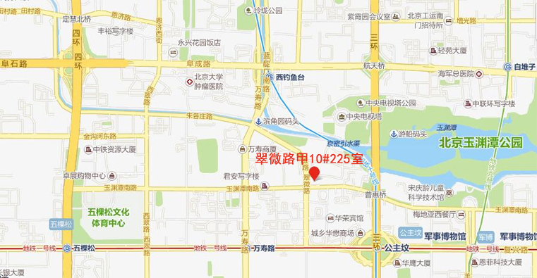

<div class="sidebarbj">
    <!--侧边栏-->
    <main class="container">
        <div class="row sidebartop">
            <!--左侧栏-->
            <div class="col-lg-2 col-md-2 col-xs-12 sidebar">
                <div id="about-content" class="about-content">
                    <ul id="about-tab" class="about-tab">
                        <li class="table-people active" href="#about-we" data-toggle="tab"
                            ng-click="vm.toggle=true">
                            <div class="about about-we" ng-class="{'about-we-active': vm.toggle}"></div>
                            <a ng-class="{'hover': vm.toggle}" class="mg-left-10">关于我们</a>
                        </li>
                        <li class="table-phone" href="#contact-we" data-toggle="tab"
                            ng-click="vm.toggle=false">
                            <div class="about contact-we" ng-class="{'contact-we-active': !vm.toggle}"></div>
                            <a ng-class="{'hover': !vm.toggle,'contact-we-active': !vm.toggle}"
                               class="mg-left-10">联系我们</a>
                        </li>
                        <div id="box1" ng-hide="vm.toggle" class="box1"></div>
                        <div id="box2" ng-hide="!vm.toggle" class="box2"></div>
                    </ul>
                </div>
            </div>
            <!--主题内容-->
            <div class="col-lg-5 col-md-8 col-xs-12 team-recommended tab-content ">
                <!--关于我们-->
                <div class="tab-pane fade in active" id="about-we">
                    <div class="txt-words">
                        <p class="team-name">什么是萝卜多</p>
                        <li>
                            萝卜多是针对创业公司以及独立人才寻找伙伴合作，提供多对多服务，以按需推荐的方式帮助创业团队以及人才解决、盲目寻找、茫然等待的问题。萝卜多不同于其他招聘网站。萝卜多的合作企业和候选人，都是萝卜多精心筛选，认证，陪伴多年的伙伴。
                        </li>
                        <p class="team-title">萝卜多团队介绍</p>
                        <li>
                            <p>
                                成立于2014年，2015年3月开始运营，先后开启了IT修真院、草船云、萝卜多等三条项目主线，主打高质专业高效低价的理念，以卓越的技术实力和人才鉴别能力奠定基石，立足市场。
                            </p>
                            <p>
                                葡萄藤始终秉持促进中国企业创新与成长为愿景，凭借其团队丰富的行业经验和全球资源网络以及在业界的声誉，不遗余力地帮助创业家和他们的企业突破自我、不断创新、共创事业、共享成功！
                            </p>
                        </li>
                    </div>
                </div>
                <!--联系我们-->
                <div class="tab-pane fade" id="contact-we">
                    <div class="txt-words ">
                        <p class="team-Company-name">北京葡萄腾信息技术有限公司</p>
                        <div class="box-container-new">
                            <div class="picture-tuned">
                                
                            </div>
                            <span class="contact-us">电话：</span>
                            <span>   (010)59478634</span>
                        </div>
                        <div class="box-container-new">
                            <div class="picture-tuned">
                                
                            </div>
                            <span class="contact-us">网址：</span>
                            <span>www.luoboduo.com</span>
                        </div>
                        <div class="box-container-new">
                            <div class="picture-tuned">
                                
                            </div>
                            <span class="contact-us">邮箱：</span>
                            <span>kefu@ptteng.com</span>
                        </div>
                        <div class="box-container-new">
                            <div class="picture-tuned">
                                
                            </div>
                            <span class="contact-us">地址：</span>
                            <span>北京市海淀区翠微路甲10院225室</span>
                        </div>
                        <div class="box-container-maps">
                            
                        </div>
                    </div>
                </div>
            </div>
        </div>
    </main>
</div>

